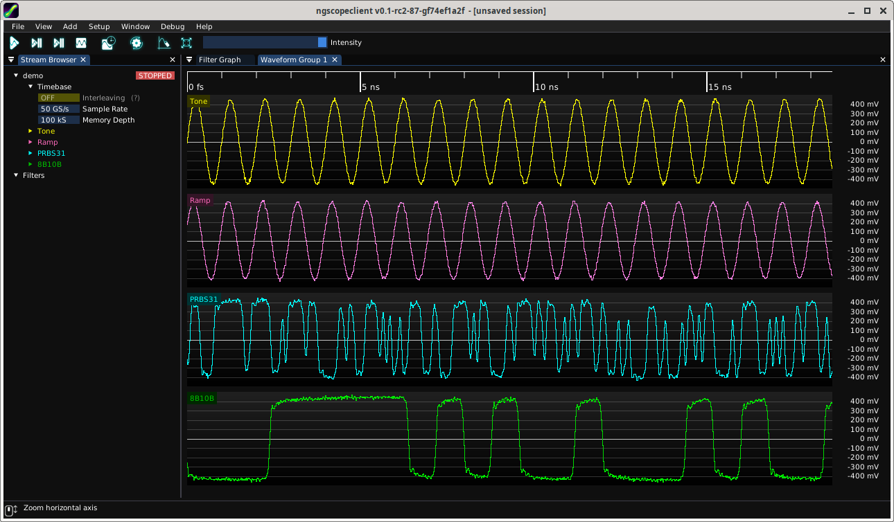
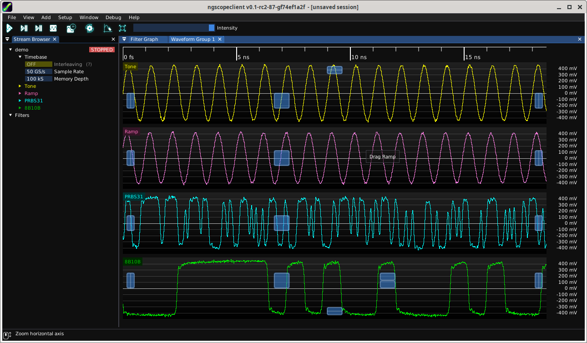
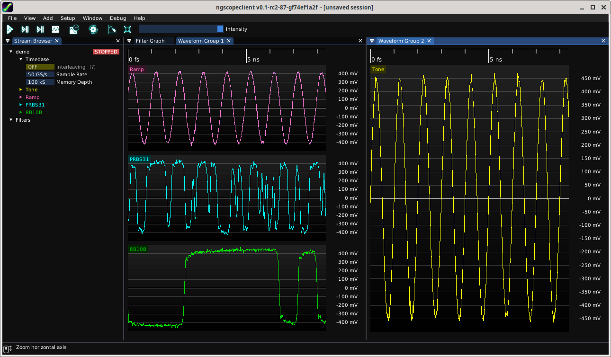
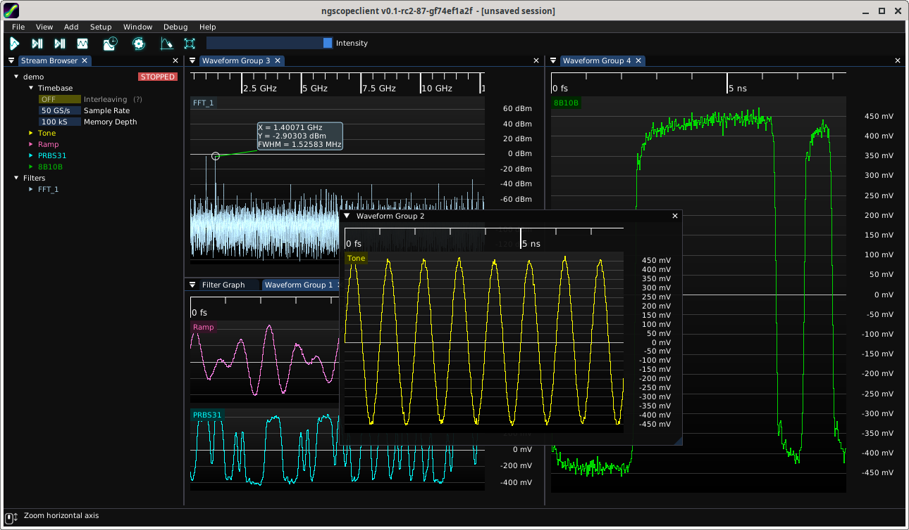

A waveform group is a collection of one or more waveform views stacked vertically under a common timeline. All waveform views within a group are equally sized and share the same timeline and vertical cursor(s), but may have independent vertical range and offset settings.
When a new oscilloscope is added to an empty ngscopeclient session, all enabled channels on the attached instrument(s) are displayed in a single waveform group (Figure 8.1). If no channels are enabled at connection time, the first channel will be enabled and displayed.

As you add protocol decodes or look at different parts of a waveform, it may be helpful to create additional waveform groups. Typical reasons for creating additional groups include:
New waveform groups are automatically created when adding a channel which is not compatible with any existing group. For example, if your session has a single group containing time-domain waveforms, adding a FFT filter block will result in a new waveform group being created to contain the FFT. Additional frequency-domain waveforms will then be added to this group by default.
A new group may also be created at any time by clicking on a channel name and dragging it to the top, bottom, left, or right edge of an existing group. An overlay (Fig. 8.2) will be displayed showing the resulting split. For example, dropping the channel on the right side of the window produces the layout shown in Fig. 8.3.


Waveform groups may be resized arbitrarily by dragging the separator between them. The title bar of a group may also be dragged, allowing the entire group to be undocked as a floating window. Floating windows can be re-docked by dragging the title bar back into the main ngscopeclient window (or another floating window), creating new tabs or splitting existing groups as desired (Fig. 8.4).
